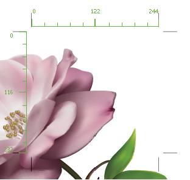

Use crop area rulers
You can display rulers by selecting Show Crop Area Rulers in the Crop Area Options dialog box, which you open by double-clicking the Crop Area tool. Rulers are useful when you’re working with art intended for export to video. The numbers on the rulers reflect device-specific pixels, regardless of the measurement unit specified in preferences. The default Pixel Aspect Ratio (PAR) for Illustrator is 1.0 (for square pixels)—this value changes according to the crop area preset you choose either in the Crop Area Options dialog box or the New Document dialog box.
If you’re using nonsquare pixels, the ruler provides for easier device-specific pixel calculations. For example, if you specify a crop area of 100 x100 Illustrator points, and you want to know the exact size in device-dependent pixels before exporting the file for use in a NTSC DV Widescreen, you can set the crop area ruler in Illustrator to use a pixel aspect ratio of 1.2 (for wide pixels) and the ruler will reflect the change and display the crop area as 83 x100 device pixels (100/1.2 = 83.333).

- Double-click the Crop Area tool in the Tools panel.
- Select Show Crop Area Rulers and set a value for Ruler Pixel Aspect Ratio.